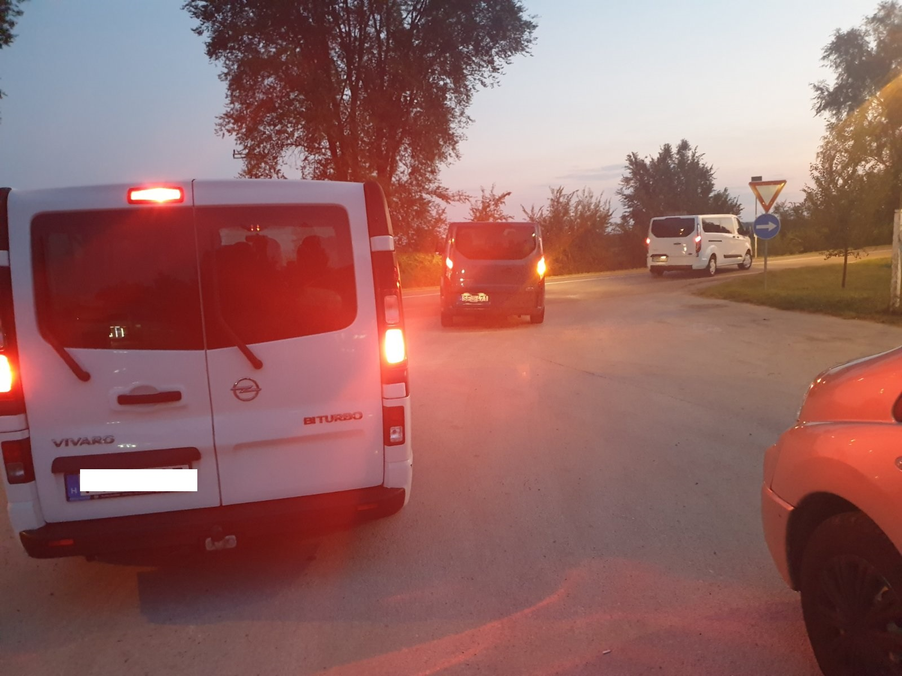
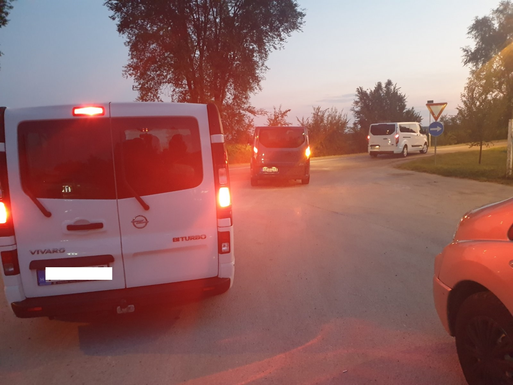

Ilyen lesz az utazásod

KOMFORTOS
Az új autó teljes kényelmét élvezheted utazásod alatt: az ülések kényelmesek, a belső tér csendes. Télen a kellemes meleget padlófűtés biztosítja Neked. Nyáron pedig tetőklímával hűtünk, így nem fázol meg, ha elől ülsz, és nincs meleged ha hátul.

BIZTONSÁGOS
Nem kell fél szemmel az utat lesned! Lelkes, képzett sofőrjeink több százezer kilométert vezettek már le, nagy rutinnal rendelkeznek. Te csak aludj nyugodtan, beszélgess, vagy hallgass zenét, nézelődj!

KISZÁMÍTHATÓ
Váratlan helyzetekre is van megoldásunk, hiszen téged utasbiztosítás véd. Autóinkat pedig asszisztansz szolgáltatás, hogy ne kelljen órákat az út mellett vesztegelni egy másik autóra várva.
Utazz te is a Komfort24 kisbuszaival!
FoglalokUtazás képekben
 

Csomagszállítás
FONTOS! Bővülő utaskörünk igénye miatt vállalunk csomagszállítást, de elsősorban személyszállítók vagyunk. Kérlek ezért vedd figyelembe, hogy csomagszállítást csak a megadott személyszállítási útvonalon vállalunk.
Információt kérek!EXPRESSZ
24 órán belül megérkezik csomagod.
XXL CSOMAG
Nagyméretű csomagot is tudsz küldeni.
KÉNYELMES
Házhoz visszük csomagodat.
PLUSZ CSOMAG
Utasként van lehetőséged plusz csomagot hozni korrekt áron.
Útvonalterv
Nézd meg Magyarországi beszállóhelyeinket! Az M5-ös autópálya és az M1-es autópálya vonalán van lehetőséged beszállni.
- Szeged és környéke
- Kiskunfélegyháza és környéke
- Kiskunhalas és környéke
- Kecskemét és környéke
- Budapest és környéke
- Tatabánya és környéke
- Győr és környéke
Nézd meg Vajdasági beszállóhelyeinket!
- Óbecse és környéke
- Ada és környéke
- Zenta és környéke
- Magyarkanizsa és környéke
- Topolya és környéke
- Csantavér és környéke
- Szabadka és környéke
- Horgos és környéke
UTAS ELÉGEDETTSÉG
Jól megszerveztétek az utat. Minden klappolt. Jó,hogy ti mindenre gondoltok!
Szépek ezek az új buszok! Hozzá tudnék szokni ehhez a kényelemhez!
Ilyen rövid idő alatt még sosem értem haza Németországból.
Már ajánlottalak is titeket a barátnőmnek. Jövő héten utazik veletek!
Információra van még szükséged? Segítünk! Hívj!
KATTINTS a telefonszámra! Mobilról egyből hívhatóak vagyunk!